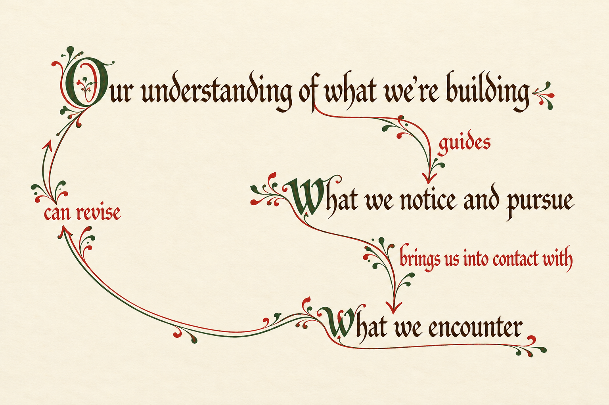

<figure id="{{id}}" class="understanding-cycle manuscript-cycle">
  <a class="illustration-link" href="assets/understanding-cycle.png" aria-label="View the understanding cycle at full size">
    
  </a>
  <figcaption><a href="assets/understanding-cycle.png">View at full size</a></figcaption>
</figure>
